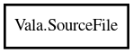

SourceFile
Object Hierarchy:

Description:
public class SourceFile
Represents a Vala source or VAPI package file.
Content:
Properties:
- public string? content { set; get; }
- public CodeContext context { set; get; }
The context this source file belongs to.
- public List<UsingDirective> current_using_directives { set; get; }
- public bool explicit { set; get; }
Whether this source-file was explicitly passed on the commandline.
- public SourceFileType file_type { set; get; }
Specifies whether this file is a VAPI package file.
- public string filename { set; get; }
The name of this source file.
- public bool from_commandline { set; get; }
Specifies whether this file came from the command line directly.
- public string gir_namespace { set; get; }
- GIR Namespace for this source file, if it's a VAPI package
- public string gir_version { set; get; }
- GIR Namespace version for this source file, if it's a VAPI package
- public string? installed_version { set; get; }
The installed package version or null
- public string? package_name { set; get; }
- public string? relative_filename { set; }
- public bool used { set; get; }
If the file has been used (ie: if anything in the file has been
emitted into C code as a definition or declaration).
Creation methods:
Methods: